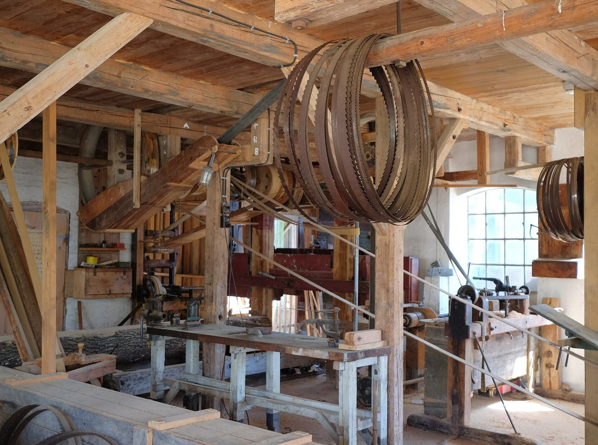

Un instrument n'a pas besoin d'en dire beaucoup pour avoir quelque chose à dire. Il a besoin d'une forme juste, d'un bois honnête et de beaucoup d'heures.
L'atelier est né d'une question simple : que garder, quand on enlève tout ce qui n'est pas nécessaire ? La réponse tient en quelques mots : la ligne, l'équilibre, le confort, la fiabilité. Le reste est du décor.
Chaque planche est choisie à la main, séchée longtemps, puis regardée encore avant d'être coupée. Un beau fil ne suffit pas : il faut qu'il tienne, qu'il sonne, qu'il vieillisse bien.

Le dessin se fait à l'ordinateur, la taille à la main. La machine garantit que deux pièces s'emboîtent au dixième de millimètre ; la main décide de l'épaisseur d'une table au toucher et à l'oreille.
« La précision ne remplace pas l'oreille : elle lui laisse le temps d'écouter. »
Un violon bien fait se répare, se règle, se transmet. C'est pour cela que chaque pièce se démonte, que chaque vis se trouve chez le quincaillier, et que l'atelier garde la fiche de chaque instrument.
— l'atelier {{SITE}}